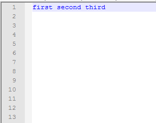
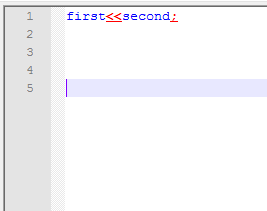
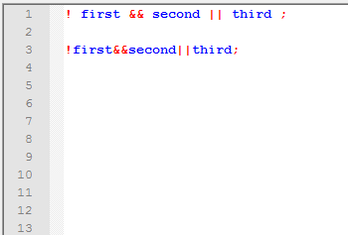
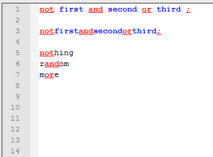
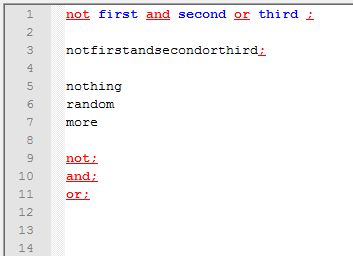

Introduction to UDL 2 code parser
This section explains what “backward” and “forward” search is.
Users should understand this part before proceeding to read about other UDL 2.1 features.
Introduction to UDL 1.0 internal logic
To understand the UDL 2.1 logic, you will first need to understand the UDL 1.0 logic, even though Notepad++ hasn’t used UDL 1.0 in years, because it teaches the basic concepts involved.

In this picture you can see a set of three keywords.
How did UDL 1.0 recognized each one?
The simplest explanation would be something like this:
- identification starts in position 0, so first “search start point” is set to 0
- when first space char is reached (in position 5), UDL 1.0 detects new “word” (characters from position 0 through position 5), and tries to compare string that consists of characters on positions from 0 to 5 (in this case word is
first), with UDL’s own keyword list. - if it detects a keyword, it sets appropriate styler (in this case keyword1 styler), and sets new “search start point” one char after space, i.e. position 6.
- now it repeats the process for other keywords.
One obvious limitation is that you have to have space around your keywords, otherwise UDL 1.0 won’t recognize them. There were some exceptions from this rule, e.g. operators in UDL 1.0 are just one charecter long, so it was possible to test each character directly and detect an operator. But generally, keywords had to be surounded by whitespace to be correctly recognized.
I call this approach “backwards” detection, because keywords are detected in backward direction (e.g. keyword first is detected only after UDL reaches position 5). And yes, I do understand what “backwards” means in English, but I am not a native speaker, so bear with me, I mean nothing offensive.
Introduction to UDL 2.1 internal logic

What we have here is a combination of two keywords (first and second) connected by a two-character operator <<, and closed with another operator ; (Note that operators are underlined so you could see them more easily). So, how does UDL 2.1 work then? Again, this is just a simplified description:
- identification starts in position 0, so first “search start point” is set to 0
- in each position UDL 2.1 performs a “forward” scan of operators.
- when UDL reaches position 5 (first
<character), it detects an operator. - now UDL 2.1 does two things:
- it performs “backward” scan (the same way UDL 1.0 does it) by comparing everything from last “search start point” until current position (in this case string
first) and it correctly identifies it as a keyword. - it applies keyword styler (for
first) and a styler for operator<<, and sets new “search start point” to position 7 (letters)
- it performs “backward” scan (the same way UDL 1.0 does it) by comparing everything from last “search start point” until current position (in this case string
- in the same way UDL 2.1 detects second operator
;with “forward” search and second keywordsecondwith backward search.
So, UDL 2.1 uses a combination of “forward” and “backward” search in order to detect keywords that are “glued” together. And all keywords in UDL 2.1 are diveded in two basic groups which I call “backwards” and “forwards” (feel free to suggest a better name for these).
Complete list of “backwards” and “forwards” keywords
Backwards:
- Keywords 1-8
- Folding in comment
- Operators2
Forwards:
- Folding in code
- Comments
- Operators1
- Delimiters 1-8
- Numbers
More on “forward” and “backward” detection logic
Understanding dual logic of UDL 2.1 (detecting keyword in both backward and forward direction) is very important. So, before we proceed with details of UDL 2.1, let’s first explain why is it important and where things can go wrong. The simplest way to demonstrate “backward” and “forward” logic is to define two sets of operators:
C++ style:
&& || !
Python style:
and or not
Forward search example

C++ boolean operators are special characters. They can never be part of variable name. That’s why they can be “glued” to preceding or following keyword. And this is demonstrated in line three. There are no white spaces in line three, but each operator is recognized by UDL 2.1.
Let’s follow what happens in the background. For example, we’ll focus on && operator in line three.
- when UDL reaches first
&character it performs “forward” search and it detects that next two characters form an operator. - at this point UDL does not care what follows after
&&it simply treats&&as an operator
Let’s repeat that again.
In C++ an operator is always an operator and can never be something else, like part of another keyword or variable name. So, in forward search, there are no false positives, and it is not important what follows before or after forward keyword.
Backward search example


Python boolean operators are normal English words and or not, very similar to other Python keywords. Unlike in C++, Python operators can easily be part of other keywords or variable names.
So, if we define Python operators as forward search keywords, we end up with more than we asked for. Let’s explain first picture (again operators are underlined to be easily recognized):
- in line one, Python operators work as expected
- in line three, operators are highlighted even if syntax is not correct
- in lines 5,6,7, operators are detected in random words that have
andornotin them
Obviously, this is not acceptable.
That’s why I defined a two sets of operators: Operators1 and Operators2:
- Operators1 are found using forward search.
- Operators2 are found using backward search.
Second picture shows what happens when we redefine Python operators as Operators2. This time around, there are no ugly surprises. Operators are detected only if surrounded by white space or forward search keywords like Operators1 (demonstrated in lines 9,10,11)
To sum up: both forward and backward search logic must be implemented in UDL 2.1 and it is the user’s job to decide which one should be applied on a given set of keywords. The rule of thumb is: if your keyword can be “glued” to other keywords, like C++ boolean operators, use forward search; if your keyword must be separated from the rest of the source code by white space or special characters, use backward search.
This option is given in case of operators and folding in code keywords. All other keyword sets simply fall into one of two search directions, and are not user selectable. Complete list is given in the paragraph above.
This page of the User Manual is derived and edited from Ivan Radić's udl-documentation, which he has maintained for Notepad++'s UDL 2.1 since 2015, under the CC BY 4.0 license.